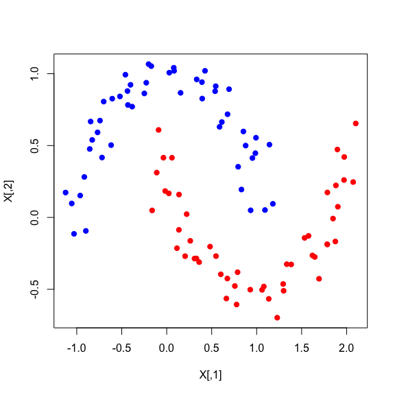

micrograd
micrograd is small library for scalar values automatic differentiation in R. It’s a port of the micrograd project by Andrej Karpathy with modifications to take advantage of R’s functional programming capabilities. Taking ideas from jax. such as the usage of value_and_grad. It’s also heavily inspired by modifications from functional-micrograd.
micrograd is only useful for educational purposes. The code is meant to be readable and simple, not efficient. It’s not meant to be used in production code.
Installation
You can install the development version of micrograd like so:
remotes::install_github("dfalbel/micrograd")Example
As an example usage of micrograd let’s train a simple multi layer perceptron on the moon dataset. You can see the data points below:
library(micrograd)
library(purrr)
library(dotty) # for .[] syntax
set.seed(18)
.[X, y] <- moon(n = 100, noise = 0.1)
plot(X, col = ifelse(y == -1, "blue", "red"), pch = 19)
This dataset is particularly challenging because the two classes are not linearly separable, so a linear regression model wouldn’t be able to achieve good results. Let’s train a simple multi layer perceptron to classify the data points.
.[params, model] <- mlp(2, c(16, 16, 1))
loss <- function(params) {
loss <- Value(0)
for (i in seq_len(nrow(X))) {
xi <- lapply(X[i,], Value)
yi <- Value(y[i])
yhati <- model(xi, params)[[1]]
# svm "max-margin" loss
loss <- loss + relu(Value(1) + (Value(-1) * yi * yhati))
}
loss <- loss * Value(1/100)
alpha <- Value(1e-4)
loss <- loss + alpha * reduce(map(unlist(params), \(p) p^2), `+`)
loss
}
apply_grads <- function(params, grads, lr = 0.01) {
purrr::map2(params, grads, function(p, g) {
if (!is.list(p) && !is.list(g)) {
Value(p@data - lr * g)
} else {
apply_grads(p, g, lr)
}
})
}
n_iter <- 50
for (iter in seq_len(n_iter)) {
.[value, .[grads]] <- value_and_grad(loss)(params)
lr <- 1.0 - 0.9*iter/n_iter
params <- apply_grads(params, grads, lr)
if (iter %% 10 == 0) cat("iter:", iter, "loss:", value, "\n")
}We can then visualize the decision boundary of the model using something like:
grid <- expand.grid(x = seq(-1, 2, length.out=20), y = seq(-1.5, 1.5, length.out=20))
scores <- grid |>
pmap_dbl(\(x, y) model(list(Value(x), Value(y)), params)[[1]]@data)
colors <- dplyr::case_when(
scores < -0.5 ~ "blue",
scores < 0.5 ~ "gray",
scores > 0.5 ~ "red"
)
plot(grid, col = colors, pch = 19, cex = 0.2)
points(X, col = ifelse(y == -1, "blue", "red"), pch = 19)